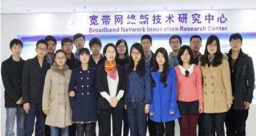

物联网技术研究室
一 研究室负责人介绍
孙咏梅： 女，博士，副教授，博士生。多年来从事宽带通信网方面的研究工作，先后主持和参加了多项国家自然基金、国家863计划、国家973计划、教育部和信息产业部科研项目。发表学术论文30余篇，同时获得已授权专利4项。曾获信息产业部科学技术进步奖二等奖一次，北京市高等教育教学成果奖一等奖一次。
主要研究方向： 物联网、量子通信
二 研究室成员
组长：李杨
成员：武杨（博）、魏忠诚、仇必青、叶梦荷、戴其进、张明、王玉鹏、武杨（硕）、王凯、王健华、詹镭、贺礼超、蔡天净、吴迪、周伟
